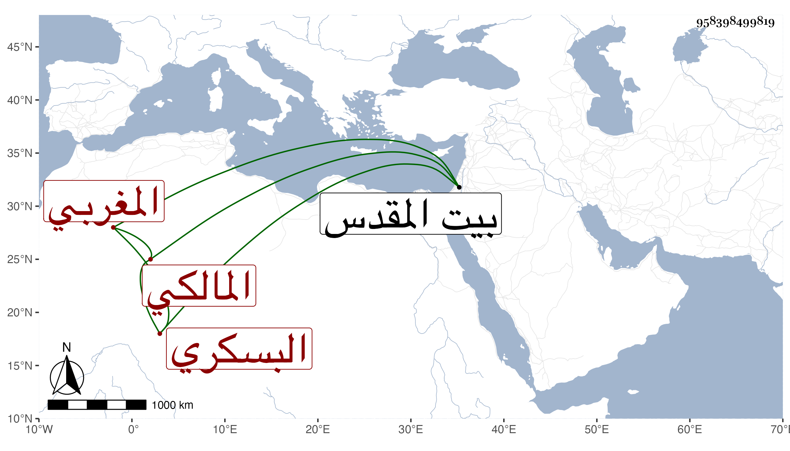

0902Sakhawi.DawLamic.ITO20230111-ara1.EIS1600.958398499819
Biography ID: 958398499819
8
عبد الله بن إبراهيم البسكري المغربي المالكي نزيل بيت المقدس وشيخ دار القرآن المدرسة السلامية به كان يقرئ الناس فيها على قاعدة إبراهيم الأموي الصوفي فانتفع به خلق وكان يعرف القراءات وغيرها ويستحضر كثيرا من المدونة وللناس فيه اعتقاد كبير بحيث نقل عن التقي الحصني أنه ذكر له في جماعة صالحين فقال ما فيهم مثله تحكى عنه مكاشفات وكرامات قال وجلست في قبة الصخرة خاليا فسمعت ملكين يقولان الشيخ عبد الله البسكري من الأولياء ورأى رجل من مشاهير الصالحين النبي صلى الله عليه وسلم وهو يقول له من قرأ الفاتحة عليه دخل الجنة فاشتهر ذلك بحيث قصد من البلاد له بل صار من لم يدركه يقرؤها على قبره واستمر . مات بعد أن قارب التسعين أو جازها حتى صار يحمل في بساط في جمادى الأولى سنة تسع وعشرين رحمه الله وإيانا .
